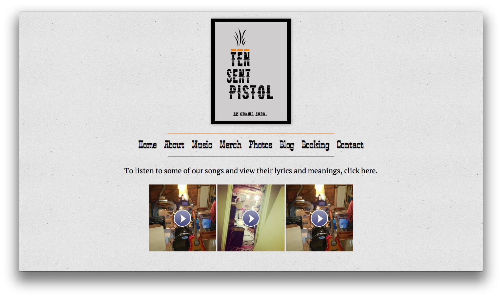

I am involved in several projects right now, but I'd still love to hear about what you are working on. Feel free to contact me through any means available on my front page.
Beyond The Code, my own personal blog, represents a different sort of web development. In this case, I worked extensively with WordPress, tailoring it to my needs. I extensively changed the design of the theme–it uses no raster graphics–and added features. Now, it has become a WordPress theme called Decode that anyone can download and use.
Keith Smiley, the developer of Sail asked for an simple icon and site that reflected Sail's design. The icon is beautiful and simple and the site provides a great springboard to the Mac App Store, along with frequently asked questions, licensing information, and a simple way to contact the developer.
One to One Help was a website I created with Derek Duncan. It highlights my first major foray into web development and design.

Ten Sent Pistol wanted a site that fit the feel of their band, and I delivered. Ten Sent Pistol evokes the feel of the band's music, but is also modern in its own way.